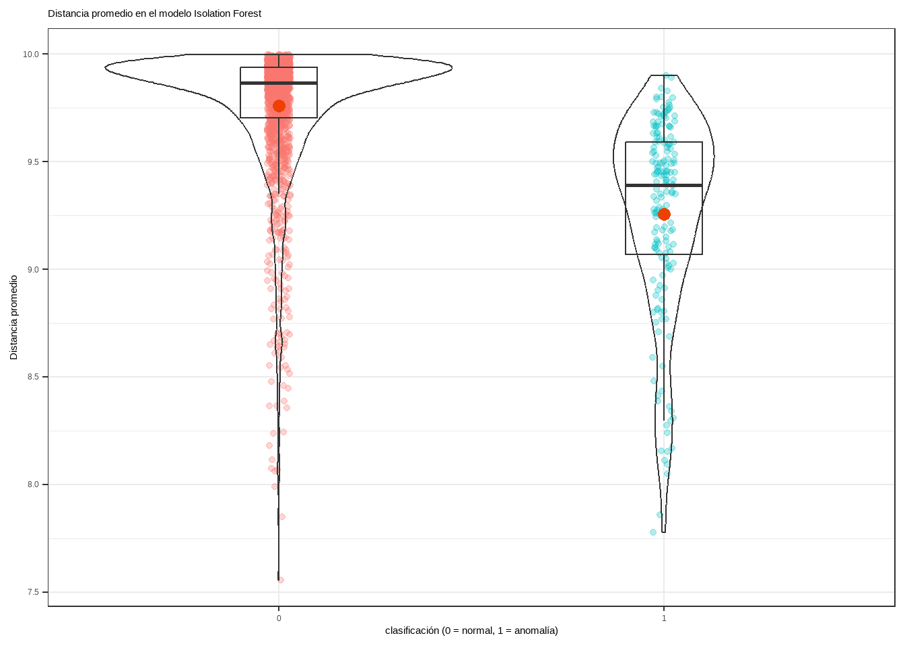
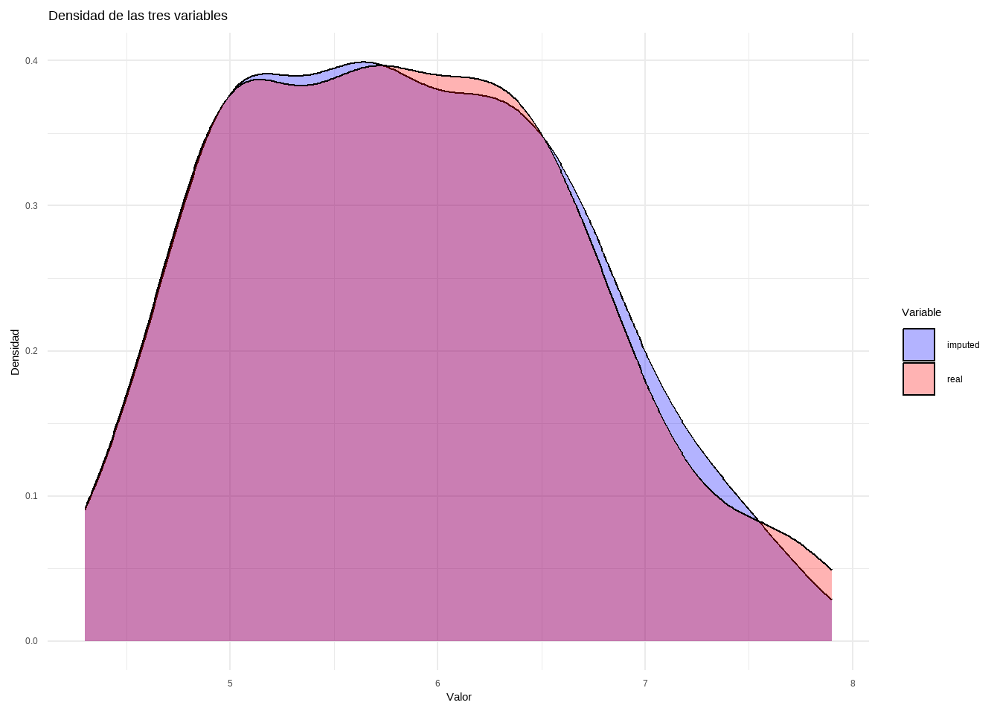

Herramientas para el preprocesamiento de los datos
Author
Dante Conti, Sergi Ramirez, (c) IDEAI
Published
September 30, 2025
Modified
September 30, 2025
1 Descripción del problema
Para hacer el apartado de preprocessing vamos a utilizar la base de datos valentine_dataset.csv.
2 Limpieza de los datos
2.1 Limpieza de los datos a nivel de variable
Los errores estructurales a nivel de variable se centran fundamentalmente en el tipo de dato de las variables. En primer lugar, se visualizan los datos con la función diagnose() de dlookr.
2.2 Eliminación de observaciones duplicadas o irrelevantes
Las observaciones duplicadas aparecen frecuentemente durante la recogida de datos e integración de las bases de datos, por lo que dichas duplicidades deben ser eliminadas en esta fase de limpieza.
A continuación, se usa la función overview() del paquete dlookr.
Un outlier es un valor extremo que se aleja significativamente del resto de observaciones. Detectarlos es importante porque pueden distorsionar las estadísticas, influir en los modelos y generar conclusiones erróneas.
Existen diferentes enfoques: desde análisis univariantes (una variable a la vez) hasta multivariantes (considerando la relación entre varias variables).
Para detectar los valores atípicos podemos hacer uso de la función diagnose_numeric y diagnose_category.
variables levels N freq ratio rank
1 Name Michael Johnson 20000 13 0.065 1
2 Name Jennifer Williams 20000 9 0.045 2
3 Name Ashley Jones 20000 8 0.040 3
4 Name Michael Davis 20000 8 0.040 3
5 Name Michael Miller 20000 8 0.040 3
6 Name Michael Smith 20000 8 0.040 3
7 Name Michael Williams 20000 8 0.040 3
8 Name William Smith 20000 8 0.040 3
9 Name David Johnson 20000 7 0.035 9
10 Name Jennifer Smith 20000 7 0.035 9
11 Gender Male 20000 10047 50.235 1
12 Gender Female 20000 9953 49.765 2
13 Educational_Status High School 20000 5107 25.535 1
14 Educational_Status Bsc 20000 4985 24.925 2
15 Educational_Status PhD 20000 4955 24.775 3
16 Educational_Status Master 20000 4953 24.765 4
17 Job_Type Employed 20000 10014 50.070 1
18 Job_Type Self Employed 20000 9986 49.930 2
3.1 Univariate
En este caso analizamos variable por variable.
3.1.1 Max and Min
La primera estrategia consiste en observar los valores mínimos y máximos de cada variable numérica. Esto nos da una primera idea de los rangos de los datos y de si existen valores extraños.
var. Age :
min: 18
max: 40
var. Income :
min: 20004
max: 79998
var. Appearance_Score :
min: 0
max: 99.99
var. Interests_Score :
min: 0.01
max: 100
var. Confidence_Score :
min: 0.01
max: 100
library(outliers)variable <-"Age"test <- outliers::grubbs.test(dades[, variable], opposite =TRUE)# amb el paràmetre opposite controles quina de les dues cues están buscanttest
Grubbs test for one outlier
data: dades[, variable]
G = 1.65591, U = 0.99986, p-value = 1
alternative hypothesis: highest value 40 is an outlier
3.1.6.2 Dixon’s Test
Només utilitzar per a bbdd petites (entre 3 - 30) observacions
La prueba de Rosner para valores atípicos tiene las ventajas de que: 1. se utiliza para detectar varios valores atípicos a la vez (a diferencia de la prueba de Grubbs y Dixon, que debe realizarse de forma iterativa para detectar múltiples valores atípicos), 2. Está diseñado para evitar el problema del enmascaramiento, donde un valor atípico cercano en valor a otro valor atípico puede pasar desapercibido.
A diferencia de la prueba de Dixon, tenga en cuenta que la prueba de Rosner es más apropiada cuando el tamaño de la muestra es grande (n ≥ 20).
Esta función requiere al menos dos argumentos: - los datos - la cantidad de valores atípicos sospechosos k (k = 3 como cantidad predeterminada)
Asumeix normalitat de les dades
Code
library(EnvStats)variable <-"Age"test <- EnvStats::rosnerTest(dades[, variable], k =1)test
Test Variable Statistic p.value Normality
1 Anderson-Darling DC 43.098 <0.001 ✗ Not normal
2 Anderson-Darling temp 1.812 <0.001 ✗ Not normal
3 Anderson-Darling RH 7.871 <0.001 ✗ Not normal
### Cargamos las librerias necesariaslibrary(R.matlab) # Lectura de archivos .matlibrary(solitude) # Modelo isolation forestlibrary(tidyverse) # Preparación de datos y gráficoslibrary(MLmetrics)# Carreguem les dadescardio_mat <-readMat("https://www.dropbox.com/s/galg3ihvxklf0qi/cardio.mat?dl=1")df_cardio <-as.data.frame(cardio_mat$X)df_cardio$y <-as.character(cardio_mat$y)datos <- df_cardio
Una vez que la distancia de separación ha sido calculado, se puede emplear como criterio para identificar anomalías. Asumiendo que las observaciones con valores atípicos en una o más de sus variables se separan del resto con mayor facilidad, aquellas observaciones con menor distancia promedio deberían ser las más atípicas.
En la práctica, si se está empleando esta estrategia de detección es porque no se dispone de datos etiquetados, es decir, no se conoce qué observaciones son realmente anomalías. Sin embargo, como en este ejemplo se dispone de la clasificación real, se puede verificar si realmente los datos anómalos tienen menores distancias.
Code
datos <- datos %>%bind_cols(predicciones)ggplot(data = datos,aes(x = y, y = average_depth)) +geom_jitter(aes(color = y), width =0.03, alpha =0.3) +geom_violin(alpha =0) +geom_boxplot(width =0.2, outlier.shape =NA, alpha =0) +stat_summary(fun ="mean", colour ="orangered2", size =3, geom ="point") +labs(title ="Distancia promedio en el modelo Isolation Forest",x ="clasificación (0 = normal, 1 = anomalía)",y ="Distancia promedio") +theme_bw() +theme(legend.position ="none",plot.title =element_text(size =11) )

La distancia promedio en el grupo de las anomalías (1) es claramente inferior. Sin embargo, al existir solapamiento, si se clasifican las n observaciones con menor distancia como anomalías, se incurriría en errores de falsos positivos.
Acorde a la documentación, el set de datos Cardiotocogrpahy contiene 176 anomalías. Véase la matriz de confusión resultante si se clasifican como anomalías las 176 observaciones con menor distancia predicha.
Multiple Imputation using Bootstrap and PMM
Hmisc::aregImpute(formula = ~Sepal.Length + Sepal.Width + Petal.Length +
Petal.Width + Species, data = iris.mis, n.impute = 5)
n: 150 p: 5 Imputations: 5 nk: 3
Number of NAs:
Sepal.Length Sepal.Width Petal.Length Petal.Width Species
12 15 16 16 16
type d.f.
Sepal.Length s 2
Sepal.Width s 2
Petal.Length s 2
Petal.Width s 2
Species c 2
Transformation of Target Variables Forced to be Linear
R-squares for Predicting Non-Missing Values for Each Variable
Using Last Imputations of Predictors
Sepal.Length Sepal.Width Petal.Length Petal.Width Species
0.825 0.632 0.982 0.974 0.990
Revisamos la variable Sepal.Length con la imputación realizada en cada una de las rondas.
means <-aggregate(data[, varImp], list(data[, target]), mean, na.rm =TRUE)
Imputar valores faltantes
Code
for (c in varImp) {for (g in means[, "Group.1"]) { cond <- data[, target] == g # Condición booleana en vez de which() na_index <-is.na(data[, c]) & cond # Seleccionar NA dentro del grupo# Asignar valores imputados data[na_index, c] <- means[means[, "Group.1"] == g, c] }}summary(data)
Sepal.Length Sepal.Width Petal.Length Petal.Width
Min. :4.300 Min. :2.000 Min. :1.000 Min. :0.100
1st Qu.:5.100 1st Qu.:2.800 1st Qu.:1.500 1st Qu.:0.300
Median :5.800 Median :3.000 Median :4.300 Median :1.326
Mean :5.833 Mean :3.034 Mean :3.757 Mean :1.202
3rd Qu.:6.400 3rd Qu.:3.300 3rd Qu.:5.100 3rd Qu.:1.800
Max. :7.900 Max. :4.100 Max. :6.900 Max. :2.500
Species
setosa :50
versicolor:50
virginica :50
data_long <-bind_rows(iris, data)cols_numeric <-names(data_long)[sapply(data_long, is.numeric) &names(data_long) !="Tipo"]# Convert a large datadata_long <- data_long %>%pivot_longer(cols =all_of(cols_numeric), names_to ="Variable", values_to ="Valor")
Creamos el gráfico con ggplot
Code
ggplot(data_long, aes(x = Valor, fill = Tipo)) +geom_density(alpha =0.3) +# Transparencia para comparaciónfacet_wrap(~Variable, scales ="free") +# Un gráfico por variablelabs(title ="Comparación de Distribuciones: Original vs Imputado",x ="Valor",y ="Densidad") +theme_minimal() +scale_fill_manual(values =c("blue", "red"))
Removemos la tipologia de variable
Code
iris.mis[, "Tipo"] <-NULL
4.7 Multiple Imputation by Chained Equations (MICE)
Sepal.Length Sepal.Width Petal.Length Petal.Width
Min. :4.300 Min. :2.000 Min. :1.000 Min. :0.100
1st Qu.:5.100 1st Qu.:2.800 1st Qu.:1.500 1st Qu.:0.300
Median :5.700 Median :3.000 Median :4.300 Median :1.300
Mean :5.795 Mean :3.032 Mean :3.697 Mean :1.208
3rd Qu.:6.375 3rd Qu.:3.300 3rd Qu.:5.100 3rd Qu.:1.800
Max. :7.700 Max. :4.400 Max. :6.700 Max. :2.500
NA's :12 NA's :15 NA's :16 NA's :16
Visualizamos los patrones de NA’s de la base de datos
Sepal.Length Sepal.Width Petal.Length Petal.Width
Min. :4.300 Min. :2.000 Min. :1.000 Min. :0.100
1st Qu.:5.100 1st Qu.:2.800 1st Qu.:1.600 1st Qu.:0.300
Median :5.800 Median :3.000 Median :4.400 Median :1.300
Mean :5.841 Mean :3.045 Mean :3.767 Mean :1.191
3rd Qu.:6.475 3rd Qu.:3.375 3rd Qu.:5.100 3rd Qu.:1.800
Max. :7.700 Max. :4.400 Max. :6.700 Max. :2.500
Visualizamos la diferencia entre las dos imputaciones.
Code
newBD <-data.frame(real = iris[, "Sepal.Length"], imputed = data_knn_imputation[, "Sepal.Length"])df_long <- newBD %>%pivot_longer(cols =everything(), names_to ="Variable", values_to ="Valor")ggplot(df_long, aes(x = Valor, fill = Variable)) +geom_density(alpha =0.3) +# Transparencia para mejor visualizaciónlabs(title ="Densidad de las tres variables",x ="Valor",y ="Densidad") +theme_minimal() +scale_fill_manual(values =c("blue", "red"))
NRMSE és un error normalitzat mitjà al quadrat. S’utilitza per representar l’error derivat d’imputar valors continus. El PFC (proporció de falsament classificada) s’utilitza per representar l’error derivat d’imputar valors categòrics.
newBD <-data.frame(real = iris[, "Sepal.Length"], imputed = iris.imp$ximp[, "Sepal.Length"])df_long <- newBD %>%pivot_longer(cols =everything(), names_to ="Variable", values_to ="Valor")ggplot(df_long, aes(x = Valor, fill = Variable)) +geom_density(alpha =0.3) +# Transparencia para mejor visualizaciónlabs(title ="Densidad de las tres variables",x ="Valor",y ="Densidad") +theme_minimal() +scale_fill_manual(values =c("blue", "red"))

4.9.1 Exercises:
Deploy the multiple plot to compare te imputation and not imputation with all numeric vars in dataframe
4.9.2 Extra
Quan es tracta de valors que manquen, és possible que vulgueu reemplaçar valors per valors que manquen (NA). Això és útil en els casos en què es coneix l’origen de les dades i es pot estar segur de quins valors han de faltar. Per exemple, podríeu saber que tots els valors de «N/A», «N A» i «No disponible», o -99 o -1 se suposa que falten.
naniar proporciona funcions per treballar específicament en aquest tipus de problemes utilitzant la funció replace.with.na. Aquesta funció és el compliment a tidyr::replace els NA’s, que reemplaça un valor NA per un valor especificat, mentre que naniar::replace,with_na reemplaça un valor per un NA:
Code
tidyr::replace_na: Missing values turns into a value (NA –>-99)naniar::replace_with_na: Value becomes a missing value (-99 –>NA)
4.10 MIMMI
Puedes descargar el fichero de MIMMI pinchando aquí
5 Features Selection
La selección de variables involucra un conjunto de técnicas cuyo objetivo es seleccionar el subconjunto de variables predictoras más relevante para las fases de modelización. Esto es importante porque:
Variables predictoras redundantes pueden distraer o engañar a los algoritmos de aprendizaje, lo que posiblemente se traduzca en un menor rendimiento, no solo predictivo (exactitud y precisión), sino también en términos de tiempo de computación.
Igualmente, la inclusión de variables irrelevantes aumenta el coste computacional y dificulta la interpretabilidad.
Una adecuada selección de variables tiene ventajas importantes:
Elimina las variables con información redundante
Reduce el grado de complejidad de los modelos
Evita o reduce el sobreajuste
Incrementa de la precisión de las predicciones
Reduce la carga computacional
Debe comprobarse la magnitud de la varianza de las variables candidatas a ser seleccionadas y de sus correlaciones dos a dos, así como si existen combinaciones lineales entre ellas (multicolinealidad).
Los métodos de selección de variables se pueden resumir en 2 grandes grupos:
Los que utilizan variables objetivo (supervisados)
Los que no (no supervisados)
Nos centraremos en los que utilizan variable objetivo (supervisados). Estos se pueden dividir en los siguientes grupos:
Métodos tipo filtro(Filter): puntua de mayor a menor cada variable predictora en base a su capacidad predictiva y selecciona un subconjunto de variables dependiendo de dicha puntuación.
Métodos tipo envoltura(wrapper): Elige un subconjunto de vaiables que dan como resultado el modelo con mayores prestaciones en cuanto a calidad de resultados y eficiencia.
Métodos tipo intrínsecos(embedded): Seleccionan las variables automáticamente como parte del ajuste del modelo durante el entrenamiento.
5.1 Preselección de variables
5.1.1 Varianza nula
Uno de los aspectos fundamentales en la selección de variables es comprobar si su varianza es cero o cercana a cero porque, si es así, sus valores son iguales o similares, respectivamente, y, por tanto, esas variables estarán perfectamente o cuasiperfectamente correlacionadas con el término independiente del modelo, con lo cual, en el mejor de los casos, solo añadirán ruido al modelo. Este tipo de efecto acaba afectando en la división de los conjuntos de entrenamiento y validación de los datos.
Para visualizarlo en R, podemos hacer lo siguiente:
Una de las cuestiones a tener en cuenta en el proceso de selección de variables es la magnitud de las correlaciones entre variables ya que esto puede afectar a la fiabilidad de las predicciones al tener variables muy correlacionadas. En el caso extreno el modelo tendrá problemas de colinealidad o multicolinealidad.
Para detectar las variables con muy elevada correlación entre ellas, se le pasa la función findCorrelation() de caret, con valor 0,9, a la matriz de correlaciones lineales entre las variables susceptibles de ser seleccionadas.
En la mayoría de los casos las variables que se utilizan como predictoras no son ortogonales, sino que tienen cierto grado de dependencia lineal entre ellas. Si dicho grado es moderado, las consecuencias de la no ortogonalidad en la predicción no son graves, pero en los casos de dependencia lineal cuasiperfecta las inferencias resultantes del modelo estimado distan mucho de la realidad. Dichas consecuencias son aún más graves en el caso de que las combinaciones lineales sean perfectas. Por ello, la existencia de colinealidad o combinaciones lineales entre las variables seleccionables también es una circunstancia a evitar.
Las principales fuentes de multicolinealidad son:
El método utilizado en la recogida de datos (subespacios)
Restricciones en el modelo o en la población (existencia de variables correlacionadas)
Especificación del modelo (polinomios)
Más variables que observaciones
Los efectos de la multicolinealidad en los modelos son los siguientes:
Los estimadores tendrán grandes varianzas y covarianzas
Las estimaciones de los coeficientes del modelo serán demasiado grandes
Los signos de los coeficientes estimados suelen ser distintos a los esperados
Pequeñas variaciones en los datos, o en las especificaciones del modelo, provocarán grandes cambios en los coeficientes
Utilizando la función findLinearCombos() del paquete caret permite encontrar combinaciones lineales de las variables predictoras.
Code
Madrid_Sale_num_na <- tidyr::drop_na(Madrid_Sale_num) # Es necesario eliminar los NA.(combos <-findLinearCombos(Madrid_Sale_num_na))
En el subset de variables que sobrevivien al proceso anterior, es necesario detectar cuales de ellas han de entrar en el modelo. Esta fase se realiza porque:
Queremos simplificar los modelos para hacerlos más interpretables
Mejorar la precisión del modelo
Reducir el tiempo de computación. Entrenar algoritmos con mayor velocidad
Evitar la maldición de la dimensionalidad (efecto Huges), que se refiere a las consecuencias no deseadas que tiene lugar cuando la dimensionalidad de un problema es muy elevada.
Reducir la probabilidad de sobreajuste
5.2.1Filters
Los métodos de selección de variables tipo filtro usan técnicas estadísticas para evaluar la relación entre cada variable predictora y la variable objetivo. Generalmente, consideran la influencia de cada variable predictora sobre la variable objetivo por separado. Las puntuaciones obtenidas se utilizan como base para clasificar y elegir las variables predictoras que se utilizarán en el modelo.
Si la variable predictora es numérica, entonces se usa el coeficiente de correlación de Pearson o el de Spearman (si es o no lineal). Si las variables fueran todas categóricas se podria usar medidas de asociación para tablas de contingencia. Por lo contrario si la entregada es categorica y la salida es numérica se podrian usar técnicas de ANOVA para analizar que variables son influeyentes.
Podemos usar diferentes paquetes como FSelector, caret para implementar dicha técnica. En este caso, usaremos el paquete FSinR. A continuación se muestra un ejemplo para variables predictoras numéricas. Para ello, se toma una muestra del conjunto de datos. Una vez en disposición de la muestra, primeramente se transforma la variable objetivo en categórica, siendo las categorías (intervalos) cuatro cortes de la distribución de sus valores; dicha categorización se lleva a cabo mediante binning También se eliminan los registros con datos faltantes.
Code
library("rsample")# Se toma una muestra con el paquete rsampleset.seed(7)Madrid_Sale_num_sample <-sample(1:nrow(Madrid_Sale_num), size =5000, replace =FALSE)Madrid_Sale_num_sample <- Madrid_Sale_num[Madrid_Sale_num_sample, ]# Se realiza binning con cuatro binsMadrid_Sale_num_sample_bin <- Madrid_Sale_num_sample |>mutate(price_bin =cut(PRICE, breaks =c(0, 250000, 500000, 750000, 10000000), labels =c("primerQ", "segundoQ", "tercerQ", "c"), include.lowest =TRUE)) |>select(price_bin, CONSTRUCTEDAREA, ROOMNUMBER, BATHNUMBER, HASTERRACE, HASLIFT)# Se eliminan los registros con valores missingMadrid_Sale_sample_na <-drop_na(Madrid_Sale_num_sample_bin)
Una vez discretizada la variable objetivo, se selecciona el conjunto de variables predictoras de la variable objetivo price_bin, que es la variable PRICE transformada mediante binning. Como método tipo filtro se utiliza minimum description length (MDLM), que es un método de selección de variables que se basa en una medida de la complejidad del modelo denominada “longitud mínima de la descripción” (de ahí el nombre del modelo), por lo que su objetivo es encontrar el modelo más sencillo que proporcione una explicación aceptable de los datos. Como algoritmo de búsqueda se utiliza sequential forward selection.
Code
library("FSinR")# Método tipo filtro MDLC (Minimum-Description_Length-Criterion)evaluador <-filterEvaluator("MDLC")# Se genera el algoritmo de búsquedabuscador <-searchAlgorithm("sequentialForwardSelection")# Se implementa el proceso, pasando a la función los dos parámetros anterioresresultados <-featureSelection(Madrid_Sale_sample_na, "price_bin", buscador, evaluador)# Se muestran los resultadosresultados$bestFeaturesresultados$bestValue
5.2.2Wrappers
Este enfoque realiza una búsqueda a través de diferentes combinaciones o subconjuntos de variables predictoras/clasificadoras para comprobar el efecto que tienen en la precisión del modelo.
Los métodos wrapper son de gran eficacia a la hora de eliminar variables irrelevantes y/o redundantes (cosa que no ocurre en los de tipo filtro porque se centran en el poder predictor de cada variable de forma aislada).
tienen en cuenta la circunstancia de que dos o más variables, aparentemente irrelevantes en cuanto a su capacidad predictiva o clasificatoria cuando se consideran una por una, pueden ser relevantes cuando se consideran conjuntamente. Sin embargo, son muy lentos, ya que tienen que aplicar muchísimas veces el algoritmo de búsqueda, cambiando cada vez el número de variables, siguiendo cada vez algún criterio tanto de búsqueda como de paro.
Code
# Se fijan los parámetrosevaluador <-wrapperEvaluator("rpart1SE")buscador <-searchAlgorithm("sequentialForwardSelection")# Se evalúan sobre Madrid_Sale_sample_naresults <-featureSelection(Madrid_Sale_sample_na, "price_bin", buscador, evaluador)resultados$bestFeaturesresultados$bestValue
5.2.3Embeddings
Hay algunos algoritmos de aprendizaje automático que realizan la selección automática de variables como parte del aprendizaje del modelo. Estos son los métodos de selección de tipo intrínseco, que aglutinan las ventajas de los métodos de filtro y envoltura.
Code
library("randomForest")# Usar random forest para la selección de variablesrf_modelo <-randomForest(price_bin ~ ., data = Madrid_Sale_num_sample_bin)# Listar las variables más importantesvarImp(rf_modelo)
6 Features Enginineering
La ingeniería de variables consiste en el proceso de conseguir, a partir de la información disponible, las variables idóneas (y en el número apropiado) para que los modelos o clasificadores proporcionen los mejores resultados posibles, dados los datos disponibles y el modelo a ejecutar.
Una de las herramientas más populares es el One-hot encoding. El One-hot encoding consiste en asignar a cada etiqueta un número entero o valor único según el orden alfabético. Es la codificación más popular y ampliamente utilizada.
Code
dummies <-dummyVars(" ~ .", data = Madrid_Sale_num_sample_bin)head(predict(dummies, newdata = Madrid_Sale_num_sample_bin))
7 Validación y control de calidad
Al final del proceso de limpieza de datos, estos deberían ser consistentes y seguir las reglas apropiadas para su campo de negocio. De no ser así, los modelos que se estimen en base a ellos no representarán convenientemente la realidad objeto de estudio y las conclusiones que se obtengan de dichos modelos no serán de utilidad para dicha realidad.
La verificación de si los datos son o no consistentes y si siguen o no las reglas del campo de negocio del cual proceden se puede llevar a cabo con el paquete tidyverse, que permite hacer selecciones, filtrados o tablas de frecuencias, entre otras acciones.
Una opción más sofisticada es el paquete validate, donde se pueden introducir las reglas de negocio dentro del propio código o bien desde un fichero externo. A continuación, se realiza un ejemplo con las reglas incrustadas en el propio código. Estas reglas pueden ser avisos o normas que indican error en esos datos. En este ejemplo, se han definido siete reglas: por ejemplo, PRICE ≥ 0, o que la suma de las variables HASNORTHORIENTATION, HASSOUTHORIENTATION, HASEASTORIENTATION y HASWESTORIENTATION sea la unidad. La salida que se obtiene se presenta a continuación.
En un esquema tradicional de validación, además de las reglas de validación aportadas por los expertos en el tema del que se trate, debe incluirse también un listado de reglas de corrección (igualmente aportado por los expertos en la materia) que indique cómo hay que corregir un registro cuando no cumple con una determinada regla de validación. Este modo de proceder, además de suponer un doble esfuerzo, puede conducir a inconsistencias o validaciones cíclicas.
El Método de Fellegi y Holt (MFH) da una solución a este problema, evitando dichas inconsistencias, proporcionando un procedimiento que genera un conjunto completo de reglas de validación, incorporando reglas implícitas a las formuladas por los expertos de manera explícita.
Dicho método asegura el cumplimiento de las siguientes tres premisas:
Minimizar el número de campos a corregir en un registro para hacerlo pasar todas las validaciones.
Mantener, en la medida de lo posible, la distribución conjunta original del conjunto de datos.
Derivar las reglas de corrección, directamente y de forma implícita, de las reglas de validación. Por tanto, dichas reglas de corrección no son propuestas por el experto o, en su caso, por el validador.
El MFH no está exento de limitaciones. La primera es el incremento del coste computacional, que puede llegar a constituir un problema en caso de que el número de reglas implícitas sea muy elevado, lo cual es muy frecuente. De hecho, hay casos en los que hay más reglas implícitas que registros. Para solucionar este problema, denominado “problema de localización del error”, que consiste, básicamente, en determinar el conjunto mínimo de variables a corregir para cada validación, se han propuesto varias alternativas, que incluyen métodos de investigación de operaciones, árboles binarios y metaheurísticas como algoritmos genéticos y similares.
A efectos prácticos, el MFH se puede aplicar con la función locate_errors() del paquete errorlocate, determinándose así cuáles son las variables a corregir para solventar los errores en las reglas de negocio establecidas (objeto rules).
¿Y qué se debe hacer con los registros que no cumplen las normas de validación? La respuesta es, como norma, “siempre que se disponga de información de negocio, esta debe preponderar sobre cualquier tipo de imputación”. A partir de este punto se puede proceder a realizar imputaciones determinísticas para solucionar los problemas detectados.
En el ejemplo anterior, se propone imputar el valor ROOMNUMBER=5 a los casos de los tres primeros cuartiles (todos menos el más caro) que tengan más de 10 habitaciones. Para ello, se utiliza la función modify_so() del paquete dcmodify. Para comprobar que la imputación se ha llevado a cabo con éxito, se pueden comparar los conjuntos de datos antes y después de la imputación con la función compare(), comprobándose que tal imputación se ha realizado exitosamente en los 2 registros que presentaban problemas con la regla ROOMNUMBER >= 10.
Esta web está creada por Dante Conti y Sergi Ramírez, (c) 2025
Source Code
---title: "Advance Preprocessing"subtitle: "Herramientas para el preprocesamiento de los datos"author: Dante Conti, Sergi Ramirez, (c) IDEAIdate: "`r format(Sys.Date())`"date-modified: "`r Sys.Date()`"format: html: toc: true toc-depth: 3 number-sections: true code-fold: show code-tools: true theme: cerulean pdf: toc: true number-sections: true theme: ceruleanexecute: echo: true eval: true warning: false message: falseeditor: visual---# Descripción del problemaPara hacer el apartado de preprocessing vamos a utilizar la base de datos [`valentine_dataset.csv`](https://www.kaggle.com/datasets/anyasorc/valentine-dataset).```{r}#| label: lectura-datos#| echo: false#| warning: false#| message: false#| error: falselibrary(Hmisc)# Lectura de los datosdades <-read.csv("E:/PROYECTOS/ramIA-lab_repositorio/MLforEducation/MLforEducation/material/Preprocessing/valentine_dataset.csv")tipus <-sapply(dades, class)varNum <-names(tipus)[which(tipus %in%c("integer", "numeric"))]varNum <- varNum[which(!varNum %in%c("Valentine_Date"))]varCat <-names(tipus)[which(tipus %in%c("factor", "character"))]```# Limpieza de los datos## Limpieza de los datos a nivel de variableLos **errores estructurales** a nivel de variable se centran fundamentalmente en el tipo de dato de las variables. En primer lugar, se visualizan los datos con la función `diagnose()` de `dlookr`.```{r}#| label: diagnostico-variables#| echo: true#| warning: false#| message: false#| error: falselibrary(dlookr)dlookr::diagnose(dades)```## Eliminación de observaciones duplicadas o irrelevantesLas **observaciones duplicadas** aparecen frecuentemente durante la recogida de datos e integración de las bases de datos, por lo que dichas duplicidades deben ser eliminadas en esta fase de limpieza.A continuación, se usa la función `overview()` del paquete `dlookr`.```{r}#| label: obervaciones-duplicadas#| echo: true#| warning: false#| message: false#| error: falsehead(overview(dades), n =9)```# OutliersUn outlier es un valor extremo que se aleja significativamente del resto de observaciones. Detectarlos es importante porque pueden distorsionar las estadísticas, influir en los modelos y generar conclusiones erróneas.Existen diferentes enfoques: desde análisis univariantes (una variable a la vez) hasta multivariantes (considerando la relación entre varias variables).Para detectar los valores atípicos podemos hacer uso de la función `diagnose_numeric` y `diagnose_category`.```{r}diagnose_numeric(dades)diagnose_category(dades)```## UnivariateEn este caso analizamos variable por variable.### Max and MinLa primera estrategia consiste en observar los valores mínimos y máximos de cada variable numérica. Esto nos da una primera idea de los rangos de los datos y de si existen valores extraños.```{r}#| label: min_max#| echo: true#| warning: false#| message: false#| error: falsemapply(function(x, name) {cat("var. ", name, ": \n\t min: ", min(x), "\n\t max: ", max(x), "\n")invisible(NULL) # Evita la salida de valores NULL}, dades[, varNum], colnames(dades[, varNum]))```### IQROtra manera de detectar outliers es usando el **rango intercuartílico (IQR)**. Se definen como outliers los puntos que quedan fuera del intervalo:$$[Q1 - 1.5xIQR, Q3 + 1.5xIQR]$$donde $Q1$ es el primer cuartil, $Q3$ el tercer cuartil e $IQR = Q3 - Q1$.```{r}#| label: iqr#| echo: true#| warning: false#| message: false#| error: falselibrary(EnvStats)IQROutlier <-function(variable, rmnas =TRUE) { IQ <-iqr(variable, na.rm = rmnas) intInf <-quantile(variable, probs =c(0.25, 0.75))[[1]] -1.5*IQ intSup <-quantile(variable, probs =c(0.25, 0.75))[[2]] +1.5*IQ posicions <-which(variable >= intSup | variable <= intInf)if (length(posicions) >0) {cat("Existeixen outliers en les posicions:", paste0(posicions, collapse =", ")) } else {cat("No existeixen outliers") }return(posicions)}``````{r}#| label: iqr_valor#| echo: false#| warning: false#| message: false#| error: falseIQROutlier(dades[, "Confidence_Score"])```> 👉 Aquí veremos cuántos valores son considerados extremos según este criterio en cada variable numérica.### BoxplotVisualització basada en IQR per detectar outliers.```{r}#| label: boxplot#| echo: true#| warning: false#| message: false#| error: falselibrary(ggplot2)variable <-"Age"boxplot(dades[, variable])boxplot.stats(dades[, variable])$out# Crear un boxplotggplot(dades, aes(y =get(variable))) +geom_boxplot(fill ="skyblue", color ="black") +labs(title =paste0("Boxplot de ", variable)) +theme_minimal()```### Z-ScoreUn outlier es un valor amb \|z\| \> 3 deviació estándar```{r}#| label: z_score#| echo: true#| warning: false#| message: false#| error: falsevariable <-"Age"valorEscalado <-scale(dades[, variable])hist(valorEscalado)ggplot(data.frame(valor = valorEscalado), aes(x = valor)) +geom_histogram(binwidth =0.5, fill ="skyblue", color ="black") +# Histogramageom_vline(xintercept =c(3, -3), linetype ="dashed", color ="red", size =1) +# Líneas horizontalestheme_minimal()```### Hampel IdentifierUtilitza la mediana i la desviació absoluta mediana (MAD) en lloc de la mitjana```{r}#| label: hampel#| echo: true#| warning: false#| message: false#| error: falsevariable <-"Age"lower_bound <-median(dades[, variable]) -3*mad(dades[, variable], constant =1)upper_bound <-median(dades[, variable]) +3*mad(dades[, variable], constant =1)outlier_ind <-which((dades[, variable] < lower_bound) | (dades[, variable] > upper_bound))outlier_ind```### Tests Estadístics#### Grubbs' TestDetecta valors extrems en una distribució normal```{r}#| label: grubbs_test#| echo: true#| warning: false#| message: false#| error: falselibrary(outliers)variable <-"Age"test <- outliers::grubbs.test(dades[, variable], opposite =TRUE)# amb el paràmetre opposite controles quina de les dues cues están buscanttest```#### Dixon's TestNomés utilitzar per a bbdd petites (entre 3 - 30) observacions```{r}#| label: dixon-test#| echo: true#| eval: false#| warning: false#| message: false#| error: falsevariable <-"Age"test <- outliers::dixon.test(dades[, variable], opposite =FALSE)test```#### Rosner's TestLa prueba de Rosner para valores atípicos tiene las ventajas de que: 1. se utiliza para detectar varios valores atípicos a la vez (a diferencia de la prueba de Grubbs y Dixon, que debe realizarse de forma iterativa para detectar múltiples valores atípicos), 2. Está diseñado para evitar el problema del enmascaramiento, donde un valor atípico cercano en valor a otro valor atípico puede pasar desapercibido.A diferencia de la prueba de Dixon, tenga en cuenta que la prueba de Rosner es más apropiada cuando el tamaño de la muestra es grande (n ≥ 20).Esta función requiere al menos dos argumentos: - los datos - la cantidad de valores atípicos sospechosos k (k = 3 como cantidad predeterminada)Asumeix normalitat de les dades```{r}#| label: rosner#| echo: true#| warning: false#| message: false#| error: falselibrary(EnvStats)variable <-"Age"test <- EnvStats::rosnerTest(dades[, variable], k =1)testtest$all.stats```## MultivariateHasta ahora hemos visto cada variable por separado. Sin embargo, a veces los outliers aparecen **en combinación** de variables.Para detectarlos se pueden usar métodos como la distancia de Mahalanobis o algoritmos más avanzados de detección de anomalías.```{r}#| label: plot_multivariate#| echo: true#| warning: false#| message: false#| error: falselibrary(scatterplot3d)library(readr)dades <- readr::read_csv("https://archive.ics.uci.edu/ml/machine-learning-databases/forest-fires/forestfires.csv")dades <-data.frame(dades[, c("DC", "temp", "RH")])scatterplot3d(dades[,"DC"], dades[, "temp"],dades[, "RH"])``````{r}#| label: 3d_scatterplot#| echo: true#| eval: false#| warning: false#| message: false#| error: falselibrary(rgl)# Plotrgl::plot3d(x = dades[, "DC"], y = dades[, "temp"], z = dades[, "RH"], col ="black", type ='p', radius = .1)``````{r}#| label: scatterplot_plotly#| echo: true#| warning: false#| message: false#| error: falselibrary(plotly)(fig <- plotly::plot_ly(dades, x =~DC, y =~temp, z =~RH, size =1) %>%add_markers())```### Cas general```{r}#| label: deteccio_outliers#| echo: true#| warning: false#| message: false#| error: falselibrary(mvoutlier)dades2 <- dades; Y <-as.matrix(dades2)distances <-dd.plot(Y,quan=1/2, alpha=0.025)head(distances$md.cla)head(distances$md.rob)res <-aq.plot(Y,delta=qchisq(0.975,df=ncol(Y)),quan=1/2,alpha=0.05)str(res)head(res$outliers)table(res$outliers)#windows()par(mfrow=c(1, 1))library(MVN)# mvnoutliers <- mvn(dades, multivariateOutlierMethod = "adj", showOutliers = TRUE, # showNewData = TRUE)mvnoutliers <-mvn(data = dades, mvn_test ="royston", univariate_test ="AD", multivariate_outlier_method ="adj",show_new_data =TRUE)```Visualitzem tots els outliers detectats com a true```{r}#| label: visualizacion_outliers#| echo: true#| warning: false#| message: false#| error: falsehead(summary(mvnoutliers, select ="outliers"))```Visualitzem les variables originals quines han donat els que no son outliers```{r}#| label: datos_sin_outliers#| echo: true#| warning: false#| message: false#| error: falsehead(summary(mvnoutliers, select ="new_data"))```Visualitzem els resultats del test de normalitat univariant```{r}#| label: test_normalidad_lof#| echo: true#| warning: false#| message: false#| error: falsehead(summary(mvnoutliers, select ="mvn"))```i multivariant```{r}#| label: test_normalidad_multi_lof#| echo: true#| warning: false#| message: false#| error: false#| head(summary(mvnoutliers, select ="univariate"))```### PCAMétodes basats en correlacions ens permeten detectar outliers### Distancia de MahalanobisMedeix la distancia de un punt respecte a la mitjana considerant la covariança```{r}#| label: dist_mahalanobis#| echo: true#| warning: false#| message: false#| error: falsedistancia_mahalanobis <-mahalanobis(dades, colMeans(dades), cov(dades))```Grafiquem el plot de la densitat de les distancies```{r}#| label: plot_density_mahalanobis#| echo: true#| warning: false#| message: false#| error: falseplot(density(distancia_mahalanobis))```Es mostren els valors de la bbdd que queden per sobre de el 99% de la distribució chi-cuadrat```{r}#| label: cuttoff_mahalanobis#| echo: true#| warning: false#| message: false#| error: falsecutoff <-qchisq(p =0.99, df =ncol(dades))dades[distancia_mahalanobis>cutoff, ]```Ordenamos de forma decreciente, según el score de Mahalanobis```{r}#| label: segmentar_mahalanobis#| echo: true#| warning: false#| message: false#| error: falsedades <- dades[order(distancia_mahalanobis, decreasing =TRUE),]```Visualitzem l'histograma de les distancies per veure on tallem els outliers```{r}#| label: plot_mahalanobis#| echo: true#| warning: false#| message: false#| error: falsepar(mfrow=c(1,1))hist(distancia_mahalanobis)```Descartamos los outliers según un umbral```{r}#| label: umbral_mahalanobis#| echo: true#| warning: false#| message: false#| error: falseumbral <-8dades[, "outlier"] <- (distancia_mahalanobis > umbral)dades[, "color"] <-ifelse(dades[, "outlier"], "red", "black")scatterplot3d(dades[, "DC"], dades[, "temp"], dades[, "RH"], color = dades[, "color"])(fig <- plotly::plot_ly(dades, x =~DC, y =~temp, z =~RH, color =~color, colors =c('#0C4B8E', '#BF382A')) %>%add_markers())(quienes <-which(dades[, "outlier"] ==TRUE))```#### Mahalanobis Robusto```{r}#| label: mahalanobis_robusto#| echo: true#| warning: false#| message: false#| error: falselibrary(chemometrics)dis <- chemometrics::Moutlier(dades[, c("DC", "temp", "RH")], quantile =0.99, plot =TRUE)par(mfrow =c(1, 1))plot(dis$md, dis$rd, type ="n")text(dis$md, dis$rd, labels =rownames(dades))a <-which(dis$rd >7)print(a)```### Regresió Lineal i residusUn punt amb un residu gran pot considerar-se un outlier### Distancia de CookIdentifica punts amb gran influència en la regresió. Un valor de Cook D_i \> 1 és un outliers.### K-Nearest Neighbors (KNN) Outlier ScoreBasats en la densitat local de les dades```{r}#| label: knn-outlier#| echo: true#| warning: false#| message: false#| error: falselibrary(adamethods)do_knno(dades[, c("DC", "temp", "RH")], k=1, top_n =30)```### Local Outlier Factor (LOF)Compara la densidat de un punt amb la densidat dels seus veïns. Un valor LOF alt```{r}#| label: lof1#| echo: true#| eval: false#| warning: false#| message: false#| error: falselibrary(DMwR2)library(dplyr)outlier.scores <-lofactor(dades[, c("DC", "temp", "RH")], k =5)par(mfrow=c(1,1))plot(density(outlier.scores))outlier.scoresoutliers <-order(outlier.scores, decreasing=T)outliers <-order(outlier.scores, decreasing=T)[1:5]```Aprofitarem el ACP per poder visualizar els outliers```{r}#| label: acp_lof#| echo: true#| eval: false#| warning: false#| message: false#| error: falsen <-nrow(dades[, c("DC", "temp", "RH")]); labels <-1:n; labels[-outliers] <-"."biplot(prcomp(dades[, c("DC", "temp", "RH")]), cex = .8, xlabs = labels)```Grafiquem les correlacions per veure els gráfics```{r}#| label: corrplot_lof#| echo: true#| eval: false#| warning: false#| message: false#| error: falsepch <-rep(".", n)pch[outliers] <-"+"col <-rep("black", n)col[outliers] <-"red"pairs(dades[, c("DC", "temp", "RH")], pch = pch, col = col)```Ho visualitzem en 3D```{r}#| label: pca_3d_outliers#| echo: true#| eval: false#| warning: false#| message: false#| error: falseplot3d(dades[, "DC"], dades[, "temp"], dades[, "RH"], type ="s", col = col, size =1)```#### Nueva versión de LOF```{r}#| label: lof2#| echo: true#| warning: false#| message: false#| error: falselibrary(Rlof)outliers.scores <- Rlof::lof(dades[, c("DC", "temp", "RH")], k =5)plot(density(outliers.scores))#outlier.scores <- lof(dades[, c("DC", "temp", "RH")], k=c(5:10))```### Isolation Forest```{r}#| label: isolation_forest_ddbb#| echo: true#| warning: false#| message: false#| error: false### Cargamos las librerias necesariaslibrary(R.matlab) # Lectura de archivos .matlibrary(solitude) # Modelo isolation forestlibrary(tidyverse) # Preparación de datos y gráficoslibrary(MLmetrics)# Carreguem les dadescardio_mat <-readMat("https://www.dropbox.com/s/galg3ihvxklf0qi/cardio.mat?dl=1")df_cardio <-as.data.frame(cardio_mat$X)df_cardio$y <-as.character(cardio_mat$y)datos <- df_cardio``````{r}#| label: aplicar_isolationForest#| echo: true#| warning: false#| message: false#| error: falseisoforest <- isolationForest$new(sample_size =as.integer(nrow(datos)/2),num_trees =500, replace =TRUE,seed =123)isoforest$fit(dataset = datos %>%select(-y))```Ara anem a realitzar les prediccions.```{r}#| label: predicciones_isolationForest#| echo: true#| warning: false#| message: false#| error: falsepredicciones <- isoforest$predict(data = datos %>%select(-y))head(predicciones)``````{r}#| label: plot_isolationForest#| echo: true#| warning: false#| message: false#| error: falseggplot(data = predicciones, aes(x = average_depth)) +geom_histogram(color ="gray40") +geom_vline(xintercept =quantile(predicciones$average_depth, seq(0, 1, 0.1)),color ="red",linetype ="dashed") +labs(title ="Distribución de las distancias medias del Isolation Forest",subtitle ="Cuantiles marcados en rojo" ) +theme_bw() +theme(plot.title =element_text(size =11))cuantiles <-quantile(x = predicciones$average_depth, probs =seq(0, 1, 0.05))cuantiles```### TIPS: Detección de anomalíasUna vez que la distancia de separación ha sido calculado, se puede emplear como criterio para identificar anomalías. Asumiendo que las observaciones con valores atípicos en una o más de sus variables se separan del resto con mayor facilidad, aquellas observaciones con menor distancia promedio deberían ser las más atípicas.En la práctica, si se está empleando esta estrategia de detección es porque no se dispone de datos etiquetados, es decir, no se conoce qué observaciones son realmente anomalías. Sin embargo, como en este ejemplo se dispone de la clasificación real, se puede verificar si realmente los datos anómalos tienen menores distancias.```{r}#| label: plot_deteccionAnomalias#| echo: true#| warning: false#| message: false#| error: falsedatos <- datos %>%bind_cols(predicciones)ggplot(data = datos,aes(x = y, y = average_depth)) +geom_jitter(aes(color = y), width =0.03, alpha =0.3) +geom_violin(alpha =0) +geom_boxplot(width =0.2, outlier.shape =NA, alpha =0) +stat_summary(fun ="mean", colour ="orangered2", size =3, geom ="point") +labs(title ="Distancia promedio en el modelo Isolation Forest",x ="clasificación (0 = normal, 1 = anomalía)",y ="Distancia promedio") +theme_bw() +theme(legend.position ="none",plot.title =element_text(size =11) )```La distancia promedio en el grupo de las anomalías (1) es claramente inferior. Sin embargo, al existir solapamiento, si se clasifican las n observaciones con menor distancia como anomalías, se incurriría en errores de falsos positivos.Acorde a la documentación, el set de datos Cardiotocogrpahy contiene 176 anomalías. Véase la matriz de confusión resultante si se clasifican como anomalías las 176 observaciones con menor distancia predicha.```{r}#| label: matriz_confusion#| echo: true#| warning: false#| message: false#| error: falseresultados <- datos %>%select(y, average_depth) %>%arrange(average_depth) %>%mutate(clasificacion =if_else(average_depth <=8.5, "1", "0"))mat_confusion <- MLmetrics::ConfusionMatrix(y_pred = resultados$clasificacion,y_true = resultados$y)mat_confusion```# Missing values (valores faltantes)Los **valores faltantes** aparecen cuando una observación no tiene registrado el valor en cierta variable.Manejar correctamente los NA es esencial: eliminarlos puede reducir mucho el dataset, mientras que imputarlos incorrectamente puede introducir sesgos.Existen varias técnicas:- **Eliminación de filas/columnas** con demasiados NA.- **Imputación simple**, por ejemplo reemplazando con la media o moda.- **Imputación avanzada**, como KNN o modelos predictivos.> 👉 La elección depende de la importancia de la variable, la cantidad de NA y el contexto del problema.## Generate data with NA's```{r}#| label: generar_missings#| echo: true#| warning: false#| message: false#| error: falsecolSums(is.na(iris))iris.mis <- missForest::prodNA(iris, noNA =0.1)colSums((is.na(iris.mis)))```Otra forma de crear missings en el dataframe```{r}#| label: generar_missings2#| echo: true#| eval: false#| warning: false#| message: false#| error: falseiris.mis <- mi::create.missing(iris, pct.mis =10)```## Little TestEs un test que nos permite detectar con que tipo de NA's estamos enfrente:```{r}#| label: test_little#| echo: true#| eval: false#| warning: false#| message: false#| error: falsenaniar::mcar_test(iris.mis)```Si el valor p de la prova és inferior a 0 això vol dir que les dades amb NAs s'han generat aleatòriament.## Patrons descriptius de NA en una base de dades### Explorar les relacions de NA's```{r}#| label: vis_na_total#| echo: true#| warning: false#| message: false#| error: falselibrary(visdat)library(ggplot2)library(naniar)vis_dat(airquality);vis_dat(iris.mis)vis_miss(airquality);vis_miss(iris.mis)ggplot(airquality, aes(x = Solar.R,y = Ozone)) +geom_point()ggplot(airquality, aes(x = Solar.R, y = Ozone)) +geom_miss_point()ggplot(airquality, aes(x = Solar.R, y = Ozone)) +geom_miss_point() +facet_wrap(~Month)ggplot(airquality, aes(x = Solar.R, y = Ozone)) +geom_miss_point() +facet_wrap(~Month) +theme_dark()```### Visualització dels NA's per variables```{r}#| label: vis_na_variables#| echo: true#| warning: false#| message: false#| error: falsegg_miss_var(airquality) +labs(y ="Look at all the missing ones")```### Detecció de NA's en la base de dades```{r}#| label: deteccio_na#| echo: true#| warning: false#| message: false#| error: falseaq_shadow <-bind_shadow(airquality)```Imprimeix el gràfic amb diferència a les NA i no a les NA,```{r}#| label: grafico_detec_na#| echo: true#| warning: false#| message: false#| error: falseairquality %>%bind_shadow() %>%group_by(Ozone_NA) %>%summarise_at(.vars ="Solar.R",.funs =c("mean", "sd", "var", "min", "max"),na.rm =TRUE)ggplot(aq_shadow,aes(x = Temp,colour = Ozone_NA)) +geom_density()```### Extreu estadístiques amb NAs de la base de dades```{r}#| label: estadistiques_na#| echo: true#| warning: false#| message: false#| error: falseprop_miss_case(airquality)pct_miss_case(airquality)miss_case_summary(airquality)miss_case_table(airquality)prop_miss_var(airquality)pct_miss_var(airquality)miss_var_summary(airquality)miss_var_table(airquality)```## Imputació bàsica### Imputar con la media```{r}#| label: NA_valor_mitja#| echo: true#| warning: false#| message: false#| error: falseiris.mis[, "imputed_Sepal.Length"] <-with(iris.mis, Hmisc::impute(Sepal.Length, mean))```### Imputar con la mediana```{r}#| label: NA_valor_mediana#| echo: true#| eval: false#| warning: false#| message: false#| error: falsepre_median <-preProcess(dades, method ="medianImpute")imputed_median <-predict(pre_median, dades)diagnose(imputed_median)```### Imputar con un valor aleatorio```{r}#| label: NA_valor_aleatori#| echo: true#| warning: false#| message: false#| error: falseiris.mis[, "imputed_Sepal.Length2"] <-with(iris.mis, Hmisc::impute(Sepal.Length, 'random'))```De manera similar podeu utilitzar la mediana min, max, per imputar el valor que manca.### Representa la distribució a variables reals i d'imputació a través del gráfico de densidad con ggplot2```{r}#| label: grafico_imputacion#| echo: true#| warning: false#| message: false#| error: falsedf_long <- iris.mis %>%select(Sepal.Length, imputed_Sepal.Length, imputed_Sepal.Length2) %>%pivot_longer(cols =everything(), names_to ="Variable", values_to ="Valor")ggplot(df_long, aes(x = Valor, fill = Variable)) +geom_density(alpha =0.3) +# Transparencia para mejor visualizaciónlabs(title ="Densidad de las tres variables",x ="Valor",y ="Densidad") +theme_minimal() +scale_fill_manual(values =c("blue", "red", "green"))iris.mis[, c("imputed_Sepal.Length", "imputed_Sepal.Length2")] <-NULL```Otra forma es usando el paquete `argImpute`.```{r}#| label: argImpute#| echo: true#| warning: false#| message: false#| error: false(impute_arg <- Hmisc::aregImpute(~ Sepal.Length + Sepal.Width + Petal.Length + Petal.Width + Species, data = iris.mis, n.impute =5))```Revisamos la variable `Sepal.Length` con la imputación realizada en cada una de las rondas.```{r}#| label: imputacion_SL#| echo: true#| warning: false#| message: false#| error: falseimpute_arg$imputed$Sepal.Length```Calculamos la media para las 5 simulaciones.```{r}#| label: media_simulaciones#| echo: true#| warning: false#| message: false#| error: falseimputed_Sepal.Length <-rowMeans(impute_arg$imputed$Sepal.Length)new_var_imputed <- iris$Sepal.Lengthnew_var_imputed[as.numeric(names(imputed_Sepal.Length))] <- imputed_Sepal.Length```Revisamos la diferencia entre las dos imputaciones.```{r}#| label: grafico_media_simulaciones#| echo: true#| warning: false#| message: false#| error: falsenewBD <-data.frame(real = iris[, "Sepal.Length"], imputed = new_var_imputed)df_long <- newBD %>%pivot_longer(cols =everything(), names_to ="Variable", values_to ="Valor")ggplot(df_long, aes(x = Valor, fill = Variable)) +geom_density(alpha =0.3) +# Transparencia para mejor visualizaciónlabs(title ="Densidad de las tres variables",x ="Valor",y ="Densidad") +theme_minimal() +scale_fill_manual(values =c("blue", "red"))```## Multiple Iterative Regression Imputation (MI method)Imputamos los valores NA's con mi```{r}#| label: mi_imputation#| echo: true#| eval: false#| warning: false#| message: false#| error: falsemi_data <- mi::mi(iris.mis, seed =335)```Revisamos la información de las imputaciones.```{r}#| label: grafico_mi_imputation#| echo: true#| eval: false#| warning: false#| message: false#| error: falsesummary(mi_data)plot(mi_data)par(ask =FALSE)```Revisamos las interaciones de la base de datos```{r}#| label: graficamos_mi_iteration#| echo: true#| eval: false#| warning: false#| message: false#| error: falsemi_data@data```## Media con una variable targetDefinimos la variable target```{r}target ="Species"```Definimos la base de datos con NA's```{r}data <-subset(iris, select =-c(get(target)))data <- missForest::prodNA(data, noNA =0.1)data$Species <- iris[, target]```Definir variables a imputar (excluyendo la variable target)```{r}varImp <-colnames(data)[which(!colnames(data) %in% target)]```Calcular las medias por grupo```{r}means <-aggregate(data[, varImp], list(data[, target]), mean, na.rm =TRUE)```Imputar valores faltantes```{r}for (c in varImp) {for (g in means[, "Group.1"]) { cond <- data[, target] == g # Condición booleana en vez de which() na_index <-is.na(data[, c]) & cond # Seleccionar NA dentro del grupo# Asignar valores imputados data[na_index, c] <- means[means[, "Group.1"] == g, c] }}summary(data)```Visualizamos la diferencia entre las imputaciones```{r}iris[, "Tipo"] <-"original"data[, "Tipo"] <-"imputed"```Unimos en un mismo dataframe```{r}data_long <-bind_rows(iris, data)cols_numeric <-names(data_long)[sapply(data_long, is.numeric) &names(data_long) !="Tipo"]# Convert a large datadata_long <- data_long %>%pivot_longer(cols =all_of(cols_numeric), names_to ="Variable", values_to ="Valor")```Creamos el gráfico con ggplot```{r}ggplot(data_long, aes(x = Valor, fill = Tipo)) +geom_density(alpha =0.3) +# Transparencia para comparaciónfacet_wrap(~Variable, scales ="free") +# Un gráfico por variablelabs(title ="Comparación de Distribuciones: Original vs Imputado",x ="Valor",y ="Densidad") +theme_minimal() +scale_fill_manual(values =c("blue", "red"))```Removemos la tipologia de variable```{r}iris.mis[, "Tipo"] <-NULL```## Multiple Imputation by Chained Equations (MICE)Eliminamos las variables categoricas```{r}quiCat <-which(lapply(iris.mis, class) %in%c("character", "factor"))categories <-names(iris.mis)[quiCat]iris.mis2 <-subset(iris.mis, select =-c(get(categories)))summary(iris.mis2)```Visualizamos los patrones de NA's de la base de datos```{r}par(mfrow =c(1, 1))mice::md.pattern(iris.mis2, rotate.names =TRUE)```También lo podemos visualizar con el paquete VIM```{r}mice_plot <- VIM::aggr(iris.mis2, col=c('navyblue','yellow'),numbers=TRUE, sortVars=TRUE,labels=names(iris.mis), cex.axis=.7,gap=3, ylab=c("Missing data","Pattern"))```A continuación realizamos la imputación de los valores faltanes de manera multivariada```{r}imputed_Data <- mice::mice(iris.mis2, m=5, maxit =50, method ='pmm', seed =500)summary(imputed_Data)```Inspeccionamos la calidad de las imputaciones```{r}mice::stripplot(imputed_Data, Sepal.Width, pch =19, xlab ="Imputation number")imputed_Data$imp$Sepal.Width```Al final seleccionamos una de las iteracciones y la dejamos como imputación de los valores faltantes.```{r}completeData <- mice::complete(imputed_Data, action ="long")```### Exercices:1. Deploy the multiple plot to compare te imputation and not imputation with all numeric vars in dataframe## KNN```{r}tipos <-sapply(iris.mis, class)varNum <-names(tipos)[which(tipos %in%c("numeric", "integer"))]data_knn_imputation <- multiUS::KNNimp(iris.mis[, varNum], k =1)summary(data_knn_imputation)```Visualizamos la diferencia entre las dos imputaciones.```{r}newBD <-data.frame(real = iris[, "Sepal.Length"], imputed = data_knn_imputation[, "Sepal.Length"])df_long <- newBD %>%pivot_longer(cols =everything(), names_to ="Variable", values_to ="Valor")ggplot(df_long, aes(x = Valor, fill = Variable)) +geom_density(alpha =0.3) +# Transparencia para mejor visualizaciónlabs(title ="Densidad de las tres variables",x ="Valor",y ="Densidad") +theme_minimal() +scale_fill_manual(values =c("blue", "red"))```Otra forma de hacerlo en R seria la siguiente:```{r}#| label: graficamos_mi_iteration#| echo: true#| eval: false#| warning: false#| message: false#| error: falselibrary("caret")pre_knn <-preProcess(dades, method ="knnImpute", k =2)imputed_knn <-predict(pre_knn, dades)diagnose(imputed_knn)```### Exercices:1. Deploy the multiple plot to compare the imputation and not imputation with all numeric vars in dataframe## missForestImputamos los missings usando todos los parametros con los valores por defectos.```{r}library(missForest)iris.imp <-missForest(iris.mis, variablewise = T, verbose = T) ```Visualizamos los valores imputados```{r}iris.imp$ximp```Visualizamos el error cometido en las imputaciones.```{r}iris.imp$OOBerror```NRMSE és un error normalitzat mitjà al quadrat. S'utilitza per representar l'error derivat d'imputar valors continus. El PFC (proporció de falsament classificada) s'utilitza per representar l'error derivat d'imputar valors categòrics.Comparamos el accuracy actual,```{r}(iris.err <-mixError(iris.imp$ximp, iris.mis, iris))```Miramos la diferencia entre las dos imputaciones```{r}newBD <-data.frame(real = iris[, "Sepal.Length"], imputed = iris.imp$ximp[, "Sepal.Length"])df_long <- newBD %>%pivot_longer(cols =everything(), names_to ="Variable", values_to ="Valor")ggplot(df_long, aes(x = Valor, fill = Variable)) +geom_density(alpha =0.3) +# Transparencia para mejor visualizaciónlabs(title ="Densidad de las tres variables",x ="Valor",y ="Densidad") +theme_minimal() +scale_fill_manual(values =c("blue", "red"))```### Exercises:1. Deploy the multiple plot to compare te imputation and not imputation with all numeric vars in dataframe### ExtraQuan es tracta de valors que manquen, és possible que vulgueu reemplaçar valors per valors que manquen (NA). Això és útil en els casos en què es coneix l'origen de les dades i es pot estar segur de quins valors han de faltar. Per exemple, podríeu saber que tots els valors de «N/A», «N A» i «No disponible», o -99 o -1 se suposa que falten.naniar proporciona funcions per treballar específicament en aquest tipus de problemes utilitzant la funció replace.with.na. Aquesta funció és el compliment a tidyr::replace els NA's, que reemplaça un valor NA per un valor especificat, mentre que naniar::replace,with_na reemplaça un valor per un NA:```{r}#| label: code_ejemplo#| echo: true#| eval: false#| warning: false#| message: false#| error: falsetidyr::replace_na: Missing values turns into a value (NA –>-99)naniar::replace_with_na: Value becomes a missing value (-99 –>NA)```## MIMMIPuedes descargar el fichero de MIMMI pinchando [aquí](03_02_MIMMI.R)# Features SelectionLa selección de variables involucra un conjunto de técnicas cuyo objetivo es seleccionar el subconjunto de variables predictoras más relevante para las fases de modelización. Esto es importante porque:- Variables predictoras redundantes pueden distraer o engañar a los algoritmos de aprendizaje, lo que posiblemente se traduzca en un menor rendimiento, no solo predictivo (exactitud y precisión), sino también en términos de tiempo de computación.- Igualmente, la inclusión de variables irrelevantes aumenta el coste computacional y dificulta la interpretabilidad.Una adecuada selección de variables tiene ventajas importantes:1. Elimina las variables con información redundante2. Reduce el grado de complejidad de los modelos3. Evita o reduce el sobreajuste4. Incrementa de la precisión de las predicciones5. Reduce la carga computacionalDebe comprobarse la magnitud de la varianza de las variables candidatas a ser seleccionadas y de sus correlaciones dos a dos, así como si existen combinaciones lineales entre ellas (multicolinealidad).Los métodos de selección de variables se pueden resumir en 2 grandes grupos:1. Los que utilizan variables objetivo (supervisados)2. Los que no (no supervisados)Nos centraremos en los que utilizan variable objetivo (supervisados). Estos se pueden dividir en los siguientes grupos:1. **Métodos tipo filtro** *(Filter)*: puntua de mayor a menor cada variable predictora en base a su capacidad predictiva y selecciona un subconjunto de variables dependiendo de dicha puntuación.2. **Métodos tipo envoltura** *(wrapper)*: Elige un subconjunto de vaiables que dan como resultado el modelo con mayores prestaciones en cuanto a calidad de resultados y eficiencia.3. **Métodos tipo intrínsecos** *(embedded)*: Seleccionan las variables automáticamente como parte del ajuste del modelo durante el entrenamiento.## Preselección de variables### Varianza nulaUno de los aspectos fundamentales en la selección de variables es comprobar si su varianza es cero o cercana a cero porque, si es así, sus valores son iguales o similares, respectivamente, y, por tanto, esas variables estarán perfectamente o cuasiperfectamente correlacionadas con el término independiente del modelo, con lo cual, en el mejor de los casos, solo añadirán ruido al modelo. Este tipo de efecto acaba afectando en la división de los conjuntos de entrenamiento y validación de los datos.Para visualizarlo en R, podemos hacer lo siguiente:```{r}#| label: varianza_nula#| echo: true#| eval: true#| warning: false#| message: false#| error: falselibrary(caret)library(idealista18)library(tidyverse)Madrid_Sale <-as.data.frame(Madrid_Sale)numeric_cols <-sapply(Madrid_Sale, is.numeric)Madrid_Sale_num <- Madrid_Sale[, numeric_cols]varianza <-nearZeroVar(Madrid_Sale_num, saveMetrics = T)head(varianza, 2)```### Correlación entre variablesUna de las cuestiones a tener en cuenta en el proceso de selección de variables es la magnitud de las **correlaciones entre variables** ya que esto puede afectar a la fiabilidad de las predicciones al tener variables muy correlacionadas. En el caso extreno el modelo tendrá problemas de colinealidad o multicolinealidad.Para detectar las variables con muy elevada correlación entre ellas, se le pasa la función `findCorrelation()` de `caret`, con valor 0,9, a la matriz de correlaciones lineales entre las variables susceptibles de ser seleccionadas.```{r}#| label: correlaciones#| echo: true#| eval: true#| warning: false#| message: false#| error: falsemadrid_cor <-cor(Madrid_Sale_num[, 1:20])(alta_corr <-findCorrelation(madrid_cor, cutoff = .9))```Para visualizar, podemos ver el `corrplot`:```{r}#| label: grafico_correlaciones#| echo: true#| eval: true#| warning: false#| message: false#| error: falselibrary("corrplot")matriz_corr <-cor(Madrid_Sale_num[, 1:8])corrplot(matriz_corr, method ="circle")```### Combinaciones linealesEn la mayoría de los casos las variables que se utilizan como predictoras no son ortogonales, sino que tienen cierto grado de dependencia lineal entre ellas. Si dicho grado es moderado, las consecuencias de la no ortogonalidad en la predicción no son graves, pero en los casos de dependencia lineal cuasiperfecta las inferencias resultantes del modelo estimado distan mucho de la realidad. Dichas consecuencias son aún más graves en el caso de que las combinaciones lineales sean perfectas. Por ello, la existencia de colinealidad o combinaciones lineales entre las variables seleccionables también es una circunstancia a evitar.Las principales fuentes de multicolinealidad son:- El método utilizado en la recogida de datos (subespacios)- Restricciones en el modelo o en la población (existencia de variables correlacionadas)- Especificación del modelo (polinomios)- Más variables que observacionesLos efectos de la multicolinealidad en los modelos son los siguientes:- Los estimadores tendrán grandes varianzas y covarianzas- Las estimaciones de los coeficientes del modelo serán demasiado grandes- Los signos de los coeficientes estimados suelen ser distintos a los esperados- Pequeñas variaciones en los datos, o en las especificaciones del modelo, provocarán grandes cambios en los coeficientesUtilizando la función `findLinearCombos()` del paquete `caret` permite encontrar combinaciones lineales de las variables predictoras.```{r}#| label: busqueda_combinaciones#| echo: true#| eval: true#| warning: false#| message: false#| error: falseMadrid_Sale_num_na <- tidyr::drop_na(Madrid_Sale_num) # Es necesario eliminar los NA.(combos <-findLinearCombos(Madrid_Sale_num_na))```En caso de encontrarse con problemas de multicolinealidad se deberia de realizar:- Eliminación de variables predictoras que se encuentren altamente relacionadas con otras que permanecen en el modelo- Sustituir las variables predictoras por componentes principales- Incluir información externa a los datos originales. Esta alternativa implica utilizar estimadores contraídos (de Stein o ridge) o bayesianos.Si quisieramos eliminar variables que son combinaciones lineales deberiamos de hacer lo siguiente:```{r}#| label: eliminar_combinación#| echo: true#| eval: true#| warning: false#| message: false#| error: falsehead(Madrid_Sale_num_na[, -combos$remove])```## Métodos de selección de variablesEn el *subset* de variables que sobrevivien al proceso anterior, es necesario detectar cuales de ellas han de entrar en el modelo. Esta fase se realiza porque:- Queremos simplificar los modelos para hacerlos más interpretables- Mejorar la precisión del modelo- Reducir el tiempo de computación. Entrenar algoritmos con mayor velocidad- Evitar la maldición de la dimensionalidad (efecto Huges), que se refiere a las consecuencias no deseadas que tiene lugar cuando la dimensionalidad de un problema es muy elevada.- Reducir la probabilidad de sobreajuste### *Filters*Los **métodos de selección de variables tipo filtro** usan técnicas estadísticas para evaluar la relación entre cada variable predictora y la variable objetivo. Generalmente, consideran la influencia de cada variable predictora sobre la variable objetivo por separado. Las puntuaciones obtenidas se utilizan como base para clasificar y elegir las variables predictoras que se utilizarán en el modelo.Si la variable predictora es numérica, entonces se usa el coeficiente de correlación de Pearson o el de Spearman (si es o no lineal). Si las variables fueran todas categóricas se podria usar medidas de asociación para tablas de contingencia. Por lo contrario si la entregada es categorica y la salida es numérica se podrian usar técnicas de ANOVA para analizar que variables son influeyentes.Podemos usar diferentes paquetes como `FSelector`, `caret` para implementar dicha técnica. En este caso, usaremos el paquete `FSinR`. A continuación se muestra un ejemplo para variables predictoras numéricas. Para ello, se toma una muestra del conjunto de datos. Una vez en disposición de la muestra, primeramente se transforma la variable objetivo en categórica, siendo las categorías (intervalos) cuatro cortes de la distribución de sus valores; dicha categorización se lleva a cabo mediante **binning** También se eliminan los registros con datos faltantes.```{r}#| label: muestreo#| echo: true#| eval: true#| warning: false#| message: false#| error: falselibrary("rsample")# Se toma una muestra con el paquete rsampleset.seed(7)Madrid_Sale_num_sample <-sample(1:nrow(Madrid_Sale_num), size =5000, replace =FALSE)Madrid_Sale_num_sample <- Madrid_Sale_num[Madrid_Sale_num_sample, ]# Se realiza binning con cuatro binsMadrid_Sale_num_sample_bin <- Madrid_Sale_num_sample |>mutate(price_bin =cut(PRICE, breaks =c(0, 250000, 500000, 750000, 10000000), labels =c("primerQ", "segundoQ", "tercerQ", "c"), include.lowest =TRUE)) |>select(price_bin, CONSTRUCTEDAREA, ROOMNUMBER, BATHNUMBER, HASTERRACE, HASLIFT)# Se eliminan los registros con valores missingMadrid_Sale_sample_na <-drop_na(Madrid_Sale_num_sample_bin)```Una vez discretizada la variable objetivo, se selecciona el conjunto de variables predictoras de la variable objetivo `price_bin`, que es la variable `PRICE` transformada mediante *binning*. Como método tipo filtro se utiliza minimum description length (MDLM), que es un método de selección de variables que se basa en una medida de la complejidad del modelo denominada “longitud mínima de la descripción” (de ahí el nombre del modelo), por lo que su objetivo es encontrar el modelo más sencillo que proporcione una explicación aceptable de los datos. Como algoritmo de búsqueda se utiliza sequential forward selection.```{r}#| label: Filter#| echo: true#| eval: false#| warning: false#| message: false#| error: falselibrary("FSinR")# Método tipo filtro MDLC (Minimum-Description_Length-Criterion)evaluador <-filterEvaluator("MDLC")# Se genera el algoritmo de búsquedabuscador <-searchAlgorithm("sequentialForwardSelection")# Se implementa el proceso, pasando a la función los dos parámetros anterioresresultados <-featureSelection(Madrid_Sale_sample_na, "price_bin", buscador, evaluador)# Se muestran los resultadosresultados$bestFeaturesresultados$bestValue```### *Wrappers*Este enfoque realiza una búsqueda a través de diferentes combinaciones o subconjuntos de variables predictoras/clasificadoras para comprobar el efecto que tienen en la precisión del modelo.Los métodos wrapper son de gran eficacia a la hora de eliminar variables irrelevantes y/o redundantes (cosa que no ocurre en los de tipo filtro porque se centran en el poder predictor de cada variable de forma aislada).tienen en cuenta la circunstancia de que dos o más variables, aparentemente irrelevantes en cuanto a su capacidad predictiva o clasificatoria cuando se consideran una por una, pueden ser relevantes cuando se consideran conjuntamente. Sin embargo, son muy lentos, ya que tienen que aplicar muchísimas veces el algoritmo de búsqueda, cambiando cada vez el número de variables, siguiendo cada vez algún criterio tanto de búsqueda como de paro.```{r}#| label: Wrapper#| echo: true#| eval: false#| warning: false#| message: false#| error: false# Se fijan los parámetrosevaluador <-wrapperEvaluator("rpart1SE")buscador <-searchAlgorithm("sequentialForwardSelection")# Se evalúan sobre Madrid_Sale_sample_naresults <-featureSelection(Madrid_Sale_sample_na, "price_bin", buscador, evaluador)resultados$bestFeaturesresultados$bestValue```### *Embeddings*Hay algunos algoritmos de aprendizaje automático que realizan la selección automática de variables como parte del aprendizaje del modelo. Estos son los métodos de selección de tipo intrínseco, que aglutinan las ventajas de los métodos de filtro y envoltura.```{r}#| label: Embeddings#| echo: true#| eval: false#| warning: false#| message: false#| error: falselibrary("randomForest")# Usar random forest para la selección de variablesrf_modelo <-randomForest(price_bin ~ ., data = Madrid_Sale_num_sample_bin)# Listar las variables más importantesvarImp(rf_modelo)```# Features EnginineeringLa ingeniería de variables consiste en el proceso de conseguir, a partir de la información disponible, las variables idóneas (y en el número apropiado) para que los modelos o clasificadores proporcionen los mejores resultados posibles, dados los datos disponibles y el modelo a ejecutar.Una de las herramientas más populares es el **One-hot encoding**. El **One-hot encoding** consiste en asignar a cada etiqueta un número entero o valor único según el orden alfabético. Es la codificación más popular y ampliamente utilizada.```{r}#| label: one-hot-encoding#| echo: true#| eval: false#| warning: false#| message: false#| error: falsedummies <-dummyVars(" ~ .", data = Madrid_Sale_num_sample_bin)head(predict(dummies, newdata = Madrid_Sale_num_sample_bin))```# Validación y control de calidadAl final del proceso de limpieza de datos, estos deberían ser consistentes y seguir las reglas apropiadas para su campo de negocio. De no ser así, los modelos que se estimen en base a ellos no representarán convenientemente la realidad objeto de estudio y las conclusiones que se obtengan de dichos modelos no serán de utilidad para dicha realidad.La verificación de si los datos son o no consistentes y si siguen o no las reglas del campo de negocio del cual proceden se puede llevar a cabo con el paquete `tidyverse`, que permite hacer selecciones, filtrados o tablas de frecuencias, entre otras acciones.Una opción más sofisticada es el paquete `validate`, donde se pueden introducir las reglas de negocio dentro del propio código o bien desde un fichero externo. A continuación, se realiza un ejemplo con las reglas incrustadas en el propio código. Estas reglas pueden ser avisos o normas que indican error en esos datos. En este ejemplo, se han definido siete reglas: por ejemplo, `PRICE` ≥ 0, o que la suma de las variables `HASNORTHORIENTATION`, `HASSOUTHORIENTATION`, `HASEASTORIENTATION` y `HASWESTORIENTATION` sea la unidad. La salida que se obtiene se presenta a continuación.```{r}#| label: bbdd_validate#| echo: false#| eval: true#| warning: false#| message: false#| error: falseMadrid_Sale_int <-as.data.frame(Madrid_Sale) |>select(-geometry)``````{r}#| label: validate#| echo: true#| eval: true#| warning: false#| message: false#| error: falselibrary("validate")Madrid_Sale_int |>check_that( HASLIFT >=0, PRICE >=0, HASNORTHORIENTATION + HASSOUTHORIENTATION + HASEASTORIENTATION + HASWESTORIENTATION ==1,is.numeric(PRICE), UNITPRICE * CONSTRUCTEDAREA == PRICE,if (ROOMNUMBER >3) PRICE >100000,nrow(.) >=20000 ) |>summary()```En un esquema tradicional de validación, además de las reglas de validación aportadas por los expertos en el tema del que se trate, debe incluirse también un listado de reglas de corrección (igualmente aportado por los expertos en la materia) que indique cómo hay que corregir un registro cuando no cumple con una determinada regla de validación. Este modo de proceder, además de suponer un doble esfuerzo, puede conducir a inconsistencias o validaciones cíclicas.El **Método de Fellegi y Holt (MFH)** da una solución a este problema, evitando dichas inconsistencias, proporcionando un procedimiento que genera un conjunto completo de reglas de validación, incorporando reglas implícitas a las formuladas por los expertos de manera explícita.Dicho método asegura el cumplimiento de las siguientes tres premisas:- Minimizar el número de campos a corregir en un registro para hacerlo pasar todas las validaciones.- Mantener, en la medida de lo posible, la distribución conjunta original del conjunto de datos.- Derivar las reglas de corrección, directamente y de forma implícita, de las reglas de validación. Por tanto, dichas reglas de corrección no son propuestas por el experto o, en su caso, por el validador.El **MFH** no está exento de limitaciones. La primera es el incremento del coste computacional, que puede llegar a constituir un problema en caso de que el número de reglas implícitas sea muy elevado, lo cual es muy frecuente. De hecho, hay casos en los que hay más reglas implícitas que registros. Para solucionar este problema, denominado *“problema de localización del error”*, que consiste, básicamente, en determinar el conjunto mínimo de variables a corregir para cada validación, se han propuesto varias alternativas, que incluyen métodos de investigación de operaciones, árboles binarios y metaheurísticas como algoritmos genéticos y similares.A efectos prácticos, el MFH se puede aplicar con la función `locate_errors()` del paquete `errorlocate`, determinándose así cuáles son las variables a corregir para solventar los errores en las reglas de negocio establecidas (objeto rules).```{r}#| label: deteccion_error#| echo: true#| eval: true#| warning: false#| message: false#| error: falselibrary("errorlocate")Madrid_Sale_red2 <-mutate(Madrid_Sale_int, price_bin = Hmisc::cut2(PRICE, g=4))rules <-validator(if (ROOMNUMBER >=10) price_bin =="[502000,7138000]")(el <-locate_errors(Madrid_Sale_red2, rules) |>summary(el))```¿Y qué se debe hacer con los registros que no cumplen las normas de validación? La respuesta es, como norma, “siempre que se disponga de información de negocio, esta debe preponderar sobre cualquier tipo de imputación”. A partir de este punto se puede proceder a realizar imputaciones determinísticas para solucionar los problemas detectados.En el ejemplo anterior, se propone imputar el valor `ROOMNUMBER=5` a los casos de los tres primeros cuartiles (todos menos el más caro) que tengan más de 10 habitaciones. Para ello, se utiliza la función `modify_so()` del paquete `dcmodify`. Para comprobar que la imputación se ha llevado a cabo con éxito, se pueden comparar los conjuntos de datos antes y después de la imputación con la función `compare()`, comprobándose que tal imputación se ha realizado exitosamente en los 2 registros que presentaban problemas con la regla `ROOMNUMBER >= 10`.```{r}#| label: modificar_reglas#| echo: true#| eval: true#| warning: false#| message: false#| error: falselibrary("dcmodify")out <- Madrid_Sale_red2 |>modify_so(if (ROOMNUMBER >=10& price_bin !="[502000,7138000]") ROOMNUMBER <-5)rules <-validator(if (ROOMNUMBER >=10) price_bin =="[502000,7138000]")compare(rules, raw = Madrid_Sale_red2, modified = out)```# Bibliografía## Outliers- https://statsandr.com/blog/outliers-detection-in-r/#z-scores- https://m-mburu.github.io/datacamp/anomaly_detection_R/anomaly_detection.html- https://github.com/pridiltal/ctv-AnomalyDetection## Imputación- http://naniar.njtierney.com/articles/replace-with-na.html- https://cran.r-project.org/web/packages/visdat/vignettes/using_visdat.html- https://cran.r-project.org/web/packages/DMwR2/DMwR2.pdf- https://ltorgo.github.io/DMwR2/RintroDM.html#data_pre-processing- https://www.rdocumentation.org/packages/DMwR/versions/0.4.1/topics/knnImputation- https://amices.org/mice/